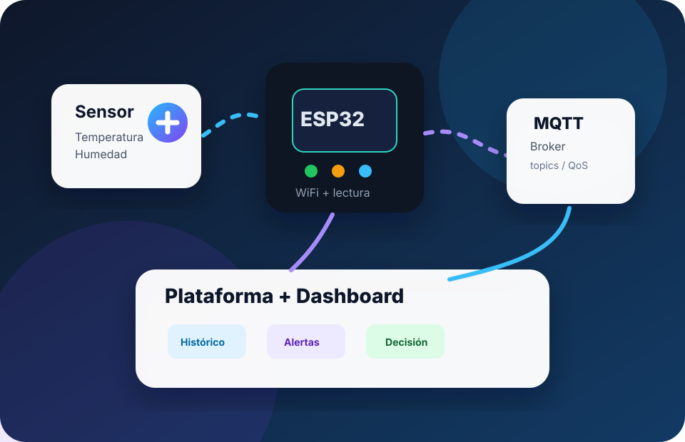
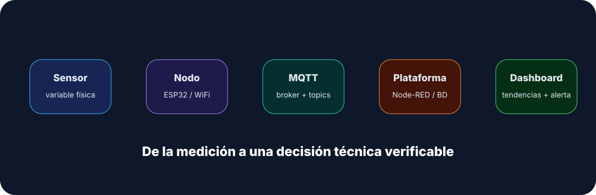
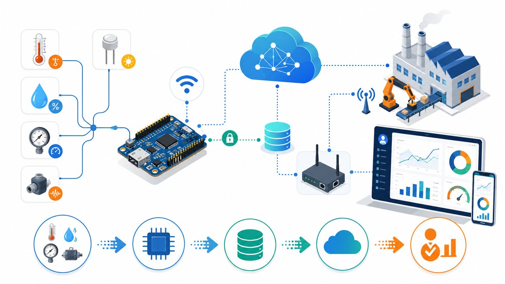
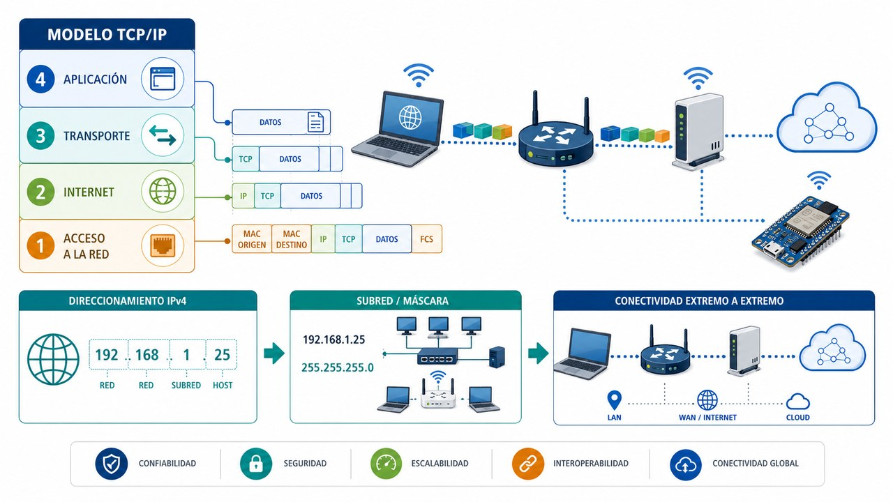
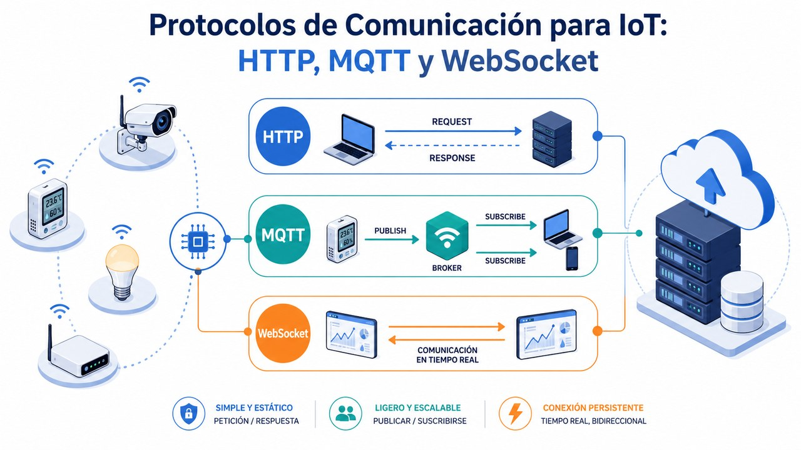
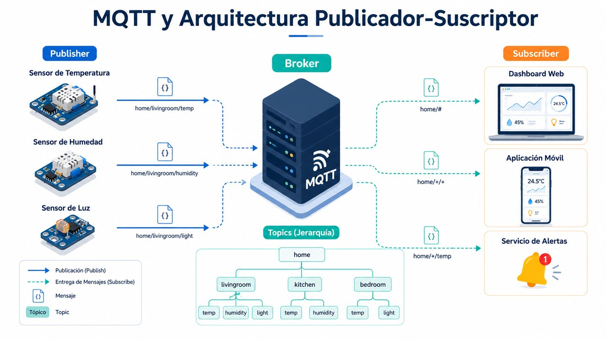
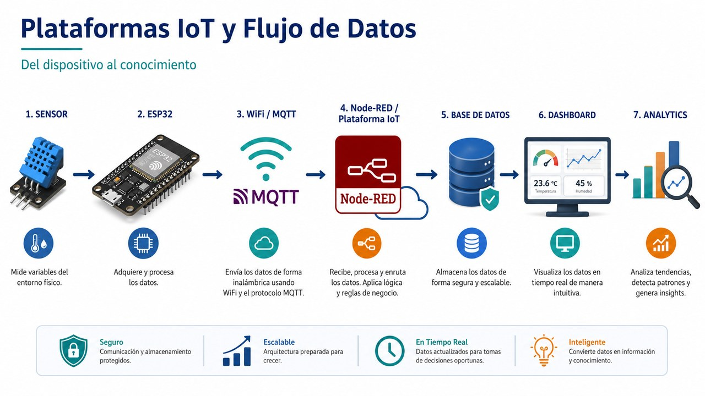
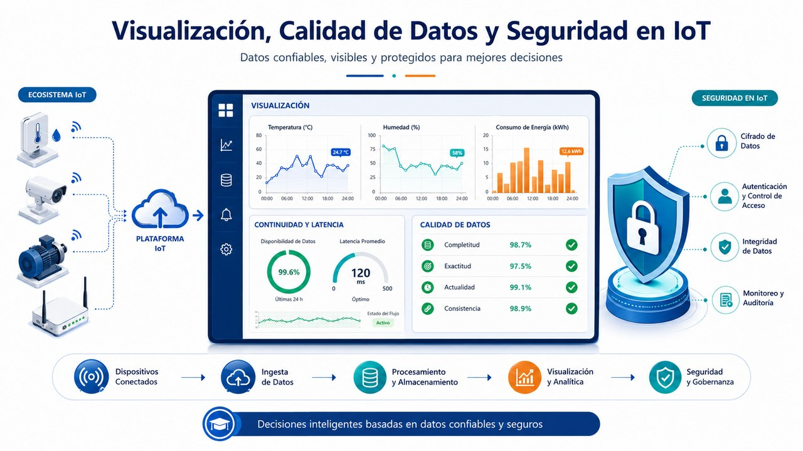
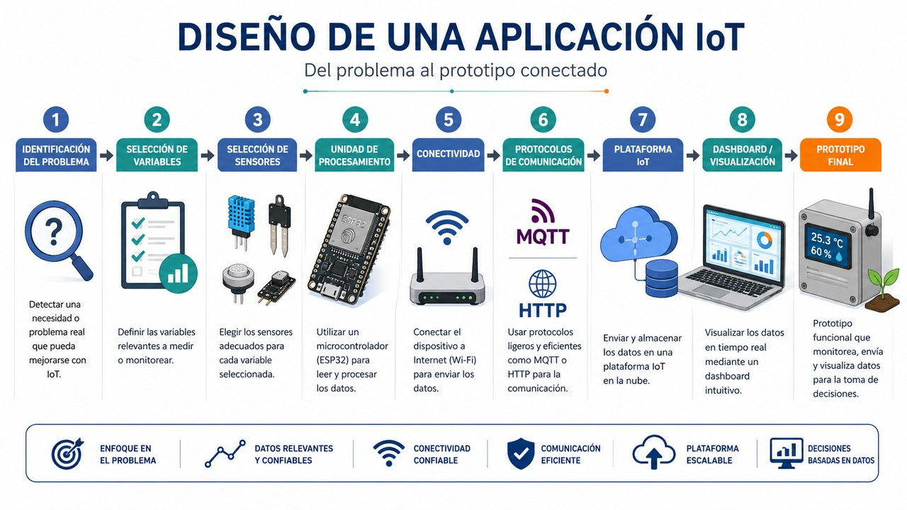
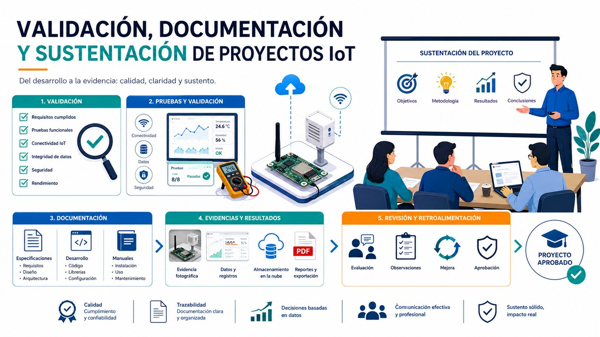

Red y comunicación
Comprensión de TCP/IP, direccionamiento, puertos, servicios y diagnóstico básico.
Curso vacacional · Ingeniería Electrónica
Aprendizaje práctico con dos sesiones teóricas, una sesión guiada de Proyecto IoT y un parcial evaluativo por semana.

Enfoque del curso
El curso se organiza en 4 semanas. En cada semana, los días 1 y 2 se dedican a teoría, el día 3 al avance guiado del Proyecto IoT y el día 4 al parcial evaluativo de los contenidos desarrollados.
Comprensión de TCP/IP, direccionamiento, puertos, servicios y diagnóstico básico.
Uso de MQTT, Node-RED, plataformas IoT, dashboards y alertas para telemetría.
Trabajo independiente guiado, parciales semanales, validación, documentación y sustentación del prototipo final.
Arquitectura sugerida
La arquitectura propuesta permite probar cada etapa de forma independiente y conectar el aprendizaje de todas las semanas.

Programa académico
Duración total: 4 semanas · 4 sesiones por semana · 4 horas por sesión. Cada semana combina teoría, avance del Proyecto IoT y parcial evaluativo.
Días 1 y 2 de cada semana
Filtra por semana o busca por tema: MQTT, dashboard, seguridad, TCP/IP, Node-RED, proyecto, etc.

Comprender la relación entre dispositivos, datos, redes y aplicaciones conectadas.

Interpretar capas TCP/IP, dirección IP, máscara, gateway, DNS, DHCP, puertos y pruebas de conectividad.

Comparar protocolos de comunicación y seleccionar el más apropiado según latencia, tráfico y escalabilidad.

Profundizar en broker, publisher, subscriber, tópicos, payload, QoS, retained message y LWT.

Integrar adquisición, procesamiento, almacenamiento y visualización en una solución IoT.

Diseñar dashboards útiles, evaluar calidad del dato y aplicar controles mínimos de seguridad.

Definir problema, variables, sensores, comunicación, plataforma, alcance y evidencias del prototipo.

Preparar evaluación final mediante pruebas, evidencias, informe técnico y sustentación organizada.
Proyecto integrador transversal
El proyecto inicia en la primera semana y se trabaja formalmente en el día 3 de cada semana. La meta es diseñar e implementar un nodo IoT con ESP32 que mida condiciones ambientales y ocupación, publique datos por MQTT y permita visualizar estado, tendencia, timestamp y alertas en un dashboard.
Día 3 de cada semana
El proyecto se desarrolla por entregas acumulativas para evitar que todo quede concentrado al final del curso.
Ficha inicial del proyecto: problema, objetivo, variables, sensores, nodo, usuario final, diagrama de arquitectura y parámetros básicos de red.
Selección del protocolo, topic tree MQTT, payload JSON, frecuencia de muestreo y prueba de publicación o simulación.
Integración con plataforma IoT, dashboard funcional, alerta por umbral, timestamp, continuidad, calidad de datos y seguridad básica.
Pruebas extremo a extremo, capturas, logs, lista de chequeo, informe técnico, limitaciones, mejoras futuras y presentación final.
Evaluación formativa
Autoevaluaciones por actividad. El puntaje se calcula en el navegador, muestra retroalimentación inmediata y queda guardado localmente en el equipo del estudiante.
Cargando cuestionarios…
Evaluación sumativa
Cada semana cierra con un parcial evaluativo de los contenidos desarrollados en las dos sesiones teóricas y del avance asociado al Proyecto IoT. El docente puede habilitar cada parcial cuando corresponda.
Seleccione la semana e ingrese la contraseña indicada por el profesor. Mientras no se desbloquee, el cuestionario de esa semana permanece oculto.
Material técnico
Incluye lecturas abiertas, documentación oficial y guías prácticas para reforzar las actividades del curso.
Libro abierto
Texto abierto para reforzar LAN, internetworking, transporte y TCP/IP.
Libro abierto
Enfoque sistémico para comprender protocolos y arquitectura de redes.
Guía
Panorama conceptual sobre oportunidades, riesgos y desafíos del Internet de las Cosas.
Estándar
Portal de referencia sobre MQTT como protocolo ligero de mensajería IoT.
Especificación
Especificación técnica para QoS, retained messages, will messages y formato de paquetes.
Documentación
Documentación oficial para crear flujos, integrar servicios y desplegar automatizaciones.
Cookbook
Recetas para conectar broker, publicar, suscribirse y trabajar con mensajes MQTT.
Documentación
Guía para visualización de series temporales con timestamp, rangos y paneles.
Documentación
Plataforma IoT para dispositivos, telemetría, dashboards y reglas.
Documentación
Plataforma IoT para prototipos, gestión de dispositivos y dashboards web/móvil.
Documentación
Recursos para conectar dispositivos, crear variables, dashboards y aplicaciones IoT.
Librería
Librería para enviar y recibir mensajes MQTT desde placas compatibles con Arduino.
Apoyo audiovisual
Estos videos pueden reemplazarse por materiales propios del docente o enlaces institucionales.
Actividad 5
Tutorial práctico para visualizar datos de sensores mediante MQTT y Node-RED.
Abrir en YouTubeActividad 4
Guía para conectar un broker, publicar y suscribirse desde flujos Node-RED.
Abrir en YouTubeActividad 6
Video útil para discutir visualización histórica y tendencias en dashboards.
Abrir en YouTubePresentaciones originales
Preguntas frecuentes
Fundamentos básicos de electrónica, manejo inicial de microcontroladores y disposición para trabajar con redes, protocolos y plataformas web.
No. Cada actividad tiene una evidencia breve y todas alimentan un proyecto integrador con diseño, datos, dashboard y sustentación.
La ruta está pensada para ESP32, sensores ambientales como DHT/SHT o equivalentes, red WiFi y una plataforma tipo Node-RED, Grafana, Blynk, Ubidots o ThingsBoard.
Funcionamiento del prototipo, claridad de la arquitectura, pruebas de conectividad, calidad del dato, seguridad básica, documentación y sustentación técnica.
Inscripción
Formulario frontal listo para integrarse con correo, Google Forms, WhatsApp, CRM o backend institucional.
Contactar por WhatsApp